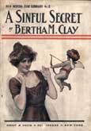

Street & Smith was one of the most significant dime novel publishers in the nineteenth century, and, in the field of women’s cheap fiction publishing, they were the most important and dominant firm. The partnership began in 1855 when Francis Street and Francis Smith, eager to start their own publishing business, purchased the story paper, The New York Weekly Dispatch from their employer, Amos Williamson for $40,000. At the time, their entire capital was $100, but Williamson agreed to sell the paper to them without a down payment. They proved to be a good risk for Williamson for they paid off the purchase price in only five years (Noel 109-110).
One of their first stories was Lilac the Wanderer, or the Perils of Beauty which according to copy in the paper would:


When Street & Smith bought the paper in 1855 their circulation was low at 18,000. Considering their youth and relative inexperience, they did fairly well for a small newspaper and gradually increased circulation. What set them up for the enormous success they would achieve, however, was their reaction to the panic of 1857. Larger publishers relied on subscriptions for their main source of income. Recreational expenses are one of the first expenses people cut during severe economic downtown, and naturally subscriptions to all manner of periodicals tapered off during the severe depression that followed the panic. Street & Smith, perhaps because of their inexperience and lack of knowledge of how things “should” be done, took a different tact. They decided to concentrate on newsstand sales. Newsstand sales had the advantage of being all cash and no credit. They were immediate, and, best of all, news dealers were in general avoided by other publishers as a means of distribution (Smith 21). Using this new method of distributing their magazine, Street & Smith managed not only to survive the panic, unlike more established magazines such as Graham’s Magazine or the New York Mirror, respected publishing concerns that went out of business, they also made money.
One of their first serials was The Vestmaker’s Apprentice, written by Frances Smith himself, was launched in October 1857, right before the panic. (Smith was a regular contributor for years which helped the firm save money on material.) The story was a huge success and Street & Smith claimed to have sold over 60,000 copies of the first installment–tripling circulation from its original low of 18,000. When the panic hit Street & Smith employed another novel idea–they printed extra copies of the next installment, sent them to their newsdealers and instructed them to give them away for free (Smith 21). News dealers were informed that “They can have as many copies as they can use to advantage, free of cost, for gratuitous circulation” (qtd in Smith 21). They gave away an installment of a new story hoping that readers would be willing to pay to find out what happened in subsequent issues.
Street & Smith built on the success of The Vestmakers Apprentice by following it up with another story about a young women endangered by lecherous men, Maggie, The Child of Charity; or, Waifs on the Sea of Humanity. The predominate story of the day may have been the sentimental tale, but Street & Smith published stories that were on the sensational side of the sentimental. But they hoped to set themselves apart by claiming that their stories were based on fact. In an announcement for the forthcoming story Belle Bingham: or, The Perils of the Poor, they claimed, “It is a Revelation from Real Life. We do not care to deal in fiction and romance when there is so much that is far more exciting than the most fertile imagination can invent to be found in everyday life” (qtd in Smith 23). There was a prejudice among middle-class readers against reading strictly for entertainment and especially against reading exciting fiction. Street & Smith attempted to assuage critics of sensational fiction by framing their stories as didactic and taken from real life. Thus in the same announcement they claim:
| Our aim is to publish a paper that will instruct as well as amuse–one that can with safety and profit be introduced to every fireside in the land. We fear that some of our contemporaries cannot say as much for the contents of their sheets. They will discover, when it is too late, perhaps, that the people of the United States will not sustain papers whose editors gather up all the filth from the gutters and dens of infamy to make their columns “spicy.” A paper, to obtain a permanent circulation, must inculcate good morals and pay some regard to decency (qtd in Smith 25). |
This campaign of claiming to print decent, real life stories to edify the readers, while at the same time publishing stories that were as sensational as any of the trashy story papers, gave Street & Smith the winning combination they needed to boost circulation. In 1859, at the time they took over final control of the magazine from Williamson, they had increased readership from 18,000 to 80,000. They had won the public over by printing tales of women in danger and especially by highlighting the perils of working-class women as exemplified in Frances Smith’s most popular story Bertha, The Sewing Machine Girl. This story would develop a life of its own, being reprinted multiple times and going on to become an extremely popular melodramatic drama that played for years after its first appearance. Street & Smith knew that their readers wanted the new romances, even in a publication that catered to male and female readers.
Street & Smith were also one of the first publishers to advertise on billboards and posters. They built billboards beside the railroad tracks between New York and Philadelphia and plastered posters all over New York City (Smith 30). Since at the time billboards were so new they didn’t have to pay rent to the landholders and because they didn’t pay for the use of the walls they decorated with their own posters, they developed a way to advertise their magazine and increase circulation for a minimal outlay. They also continued the practice of distributing copies of the magazine free to news dealers all over the United States. They always made the free copy the first issue of a serialized cliffhanger to entice the reader to buy the next installment (Smith 32). Using these new advertising methods they pushed circulation even higher to 150,000 copies a week and over the next few years circulation doubled to 300,000 (Smith 32). Now they were giving the most popular story of the day, Robert Bonner’s New York Ledger, a run for its money and the Weekly became serious competition for the Ledger’s 400,000 readers.
Street & Smith took one marketing technique from Bonner’s repertoire and began to develop a body of writers who promised to work for them exclusively. They convinced May Agnes Fleming to write only for them and they began to steal writers away from Bonner, including the wildly popular Charlotte M. Brame, who they won by offering twice as much money as Bonner had paid her (Smith 38). And it was Smith who transformed her from Charlotte M. Brame, to the new find of Street & Smith, Bertha M. Clay (Smith 38). Additional writers included Mary J. Holmes who contributed over 27 serialized novels to the Weekly and Edward Ellis, the creator of the popular character Seth Jones. Unlike other publishers who dealt primarily in copyright free material and avoided payments to authors, Street & Smith were willing to pay their exclusive authors well. Mary J. Holmes received as much as $5,000 per serial (Smith 38). Although the perils of the shop girl and adventures in the city had been a very successful formula for the magazine since Street & Smith introduced it in 1857, by the 1860s Street & Smith began to develop a different approach more in line with the advent of the new dime novel and its focus on western and detective adventures. Though the type of story published in the dime novels influenced them, they focused on weekly story papers as their method of publishing for years.
It was not until 1889 with their creation of the ten cent Log Cabin Library, aimed at adults with detective and western stories and the five cent Nugget Library, aimed at younger readers, that Street & Smith would publish in the dime novel format (Reynolds 76-77). Though this distinction mattered to the publishers because story papers were decidedly cheaper to print and bind, and it came to matter to the reader who preferred the convenience of the dime novel’s smaller size and increased portability, it did not matter in terms of content. The stories were the same and the same authors wrote them. They only difference was the format. In addition to the smaller size, they introduced the innovation of four-color covers–a move to make the new library stand out against its more established dime novel libraries and competitors.
 Their romance series for women included theBertha Clay Library begun in 1900, the Romance Series begun in 1899, and the New Romance Library begun in 1909. This move was consistent with their predominance in the women’s field in the later part of the nineteenth century and the early twentieth century. Unlike Beadle and Adams and George Munro who \introduced women’s series in the 1870s and early 1880s only to have them fail shortly after, Street & Smith began to offer women’s series and libraries in 1897 and developed them into a solid aspect of the firm’s business. For a complete discussion of the women’s series, please continue on to the Street & Smith section of “Women’s Dime Novel Romance Series and StoryPapers.”
Their romance series for women included theBertha Clay Library begun in 1900, the Romance Series begun in 1899, and the New Romance Library begun in 1909. This move was consistent with their predominance in the women’s field in the later part of the nineteenth century and the early twentieth century. Unlike Beadle and Adams and George Munro who \introduced women’s series in the 1870s and early 1880s only to have them fail shortly after, Street & Smith began to offer women’s series and libraries in 1897 and developed them into a solid aspect of the firm’s business. For a complete discussion of the women’s series, please continue on to the Street & Smith section of “Women’s Dime Novel Romance Series and StoryPapers.”
Gradually the popularity of dime novels and story papers waned and the firm changed their focus to the new pulp magazines. The firm has the remarkable distinction among cheap fiction publishers from the nineteenth century of being the only firm that is still in business. In 1959 the firm was purchased by Conde Naste and today Street & Smith continues to publish periodicals, specializing in sports publications.
References and Additional Information
“Francis Scott Smith.” New York Times, 16 April 1883: 5.
Gossage, Leslie. “Street and Smith.” Dictionary of Literary Biography. 444-450.
Noel, Mary. Villains Galore: The Heyday of the Popular Story Weekly. New York: Macmillan, 1954.
Reynolds, Quentin. The Fiction Factory. New York: Street and Smith, 1955.